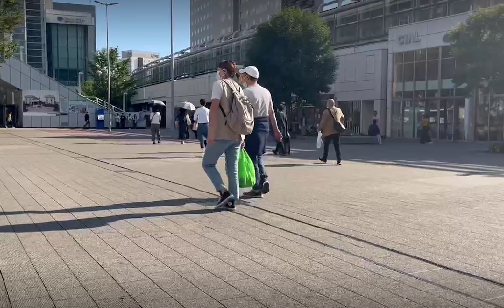
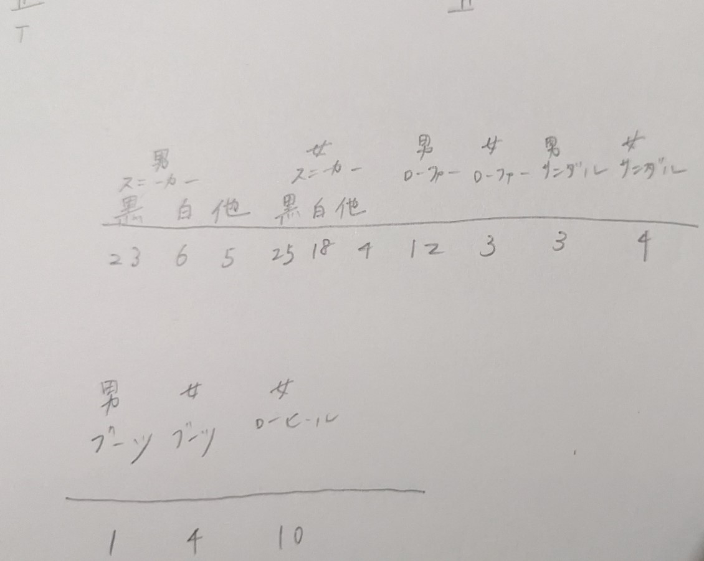
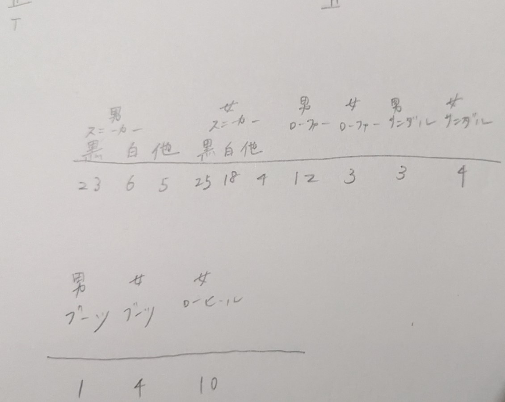

定点観察では人々のズボンに着目した。移動観察では靴に注目した。理由としては、足元はさりげなく個性が現れるものだと思い、みなとみらいにつながる桜木町駅ではどんなスタイルが多いのか気になったからだ。 動画で判別できる限り確認した。また、性別に関しては私の主観である。 
定点観察では人々のズボンに着目した。移動観察では靴に注目した。理由としては、足元はさりげなく個性が現れるものだと思い、みなとみらいにつながる桜木町駅ではどんなスタイルが多いのか気になったからだ。 動画で判別できる限り確認した。また、性別に関しては私の主観である。 
観察をする前の予想とは異なり、白や黒の、シンプルな色の靴が多かった。また、若干ではあるが、女性で白のスニーカーを履いている人が男性のその割合より多かった。
要因として動画で服装を確認すると、ショッピングをしたような袋を持っている人や、観光に来ているような、いわゆるプライベートなスタイルの人が白い傾向にあったと感じる。
しかし、全体としてはそのようにプライベートで訪れているわけではなく、仕事、ちょっとした買い物などの機会で訪れている人が多かったのではないかと考える。
服装での判断になってしまうが、スーツを着ている人はほとんどローファーであったが、女性の場合、スーツといったような服装でも多様な靴が存在していた。
女性の場合はローファーではない方が私は少し華やかに感じるのでそれも理由の一つとして挙げられるだろうか。
、